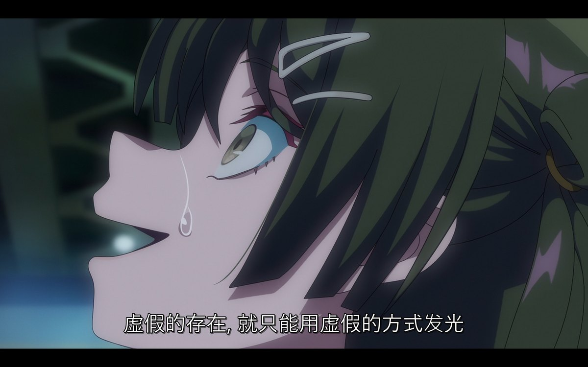
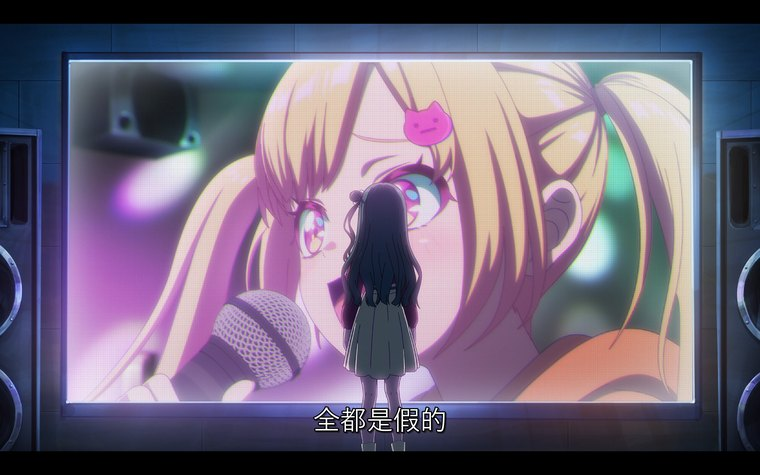
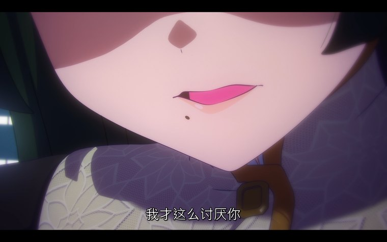

以下全部是个人观感，不代表任何官方立场，也完全不打算说服谁—— 如果你看完有不一样的看法，那反而说明这些角色是真的立住了。
开播之前，我是真的在期待
梦限大这部动画是今年 7 月份开始播出的，是在 bilibili 官方号上以直播的形式放送， 之后也会在官号上留下动画，时限为七天。我从高考前知道这个消息的时候， 就开始对这部动画狠狠地期待了——因为属于同一企划的 MyGO 和 Ave Mujica 这两部动画热度都很高，不过前者剧情质量优秀，后者剧情令人迷惑， 不过它们都有一个共同点，那就是人设做得都挺不错的。因此我很期待这部动画的播出， 想看看剧情会是什么样，人物塑造和关系性会是如何。
顺带一提，在动画开播前，这个乐队的五名成员就有在进行虚拟主播的直播活动， 而且有两三年了。不过我当时更关注动画，所以直播只会偶尔刷到她们的直播切片， 了解一点她们直播的风格。
整个追番过程：期待、失望，然后是气笑
在整个追番过程中，毫无疑问，我是从期待到失望再到气笑。因为这部动画只有 13 集， 犯了和 Ave Mujica 同样的错误，就是剧情容量对不上动画实际大小， 因此整部动画的节奏感不是很好，而且经常有令人迷惑的人物行为， 还有堪比灾难的人物塑造。
为什么最喜欢仲町阿拉蕾
比如我很喜欢仲町阿拉蕾，其中一个原因就是——阿拉蕾就算经历了由薇欧拉牵头的网络暴力， 她也以「夢はパワー」（U 咩哇抛瓦）的口号向着自己的梦想前进， 这种追梦精神让我很喜欢。但是中后期的阿拉蕾有一段时间剧情重心不在她身上， 就让一部分人认为把阿拉蕾的形象定成啥子了。
当然我现在最喜欢的成员还是仲町阿拉蕾，不管是虚拟形象还是中之人的形象， 还有直播切片我都会看。
「夢はパワー」
梦想就是力量
中之人的性格，会逆输入到角色身上
这个企划最有魅力的一点就是，中之人的性格会逆输入到动画角色上去， 因此我们能在五个人的直播中捉到动画的人设。当然她们也会分享 有什么亲身经历被编入动画剧情的（比如薇欧拉这个人物）。
薇欧拉：让人着迷的那种「扭曲」
当然，薇欧拉这个角色因为外表和某些肢体行为，使她富有别样的魅力——甚至让我着迷了。 看了第 13 集的我尤为感兴趣她和阿拉蕾的关系，当时的我甚至把 13 集的台词画面 截图下来存在一个 word 文件里仔细品鉴这些台词和对应的画面中蕴含着的味道，
第 13 集台词截图 · 节选自我整理的那个 word 文件



至今我还是认可薇欧拉和阿拉蕾「扭曲」的关系性，因为薇欧拉自身因为阿拉蕾那种 「kirakira」闪耀的光芒而自卑，认为自己是「伪物」， 而她「扭曲」的心理让她的自卑指向了对阿拉蕾的「迫害」——前几集回忆持续至今的网络暴力。
当然我全盘否定薇欧拉这样网暴陷害他人的做法，但是武士道似乎有意塑造薇欧拉这个人物 来制造爆点来吸引人气，当然薇欧拉也就成为人物塑造最好的那一个—— 起码形象深入每一个观众的心里了（笑）。